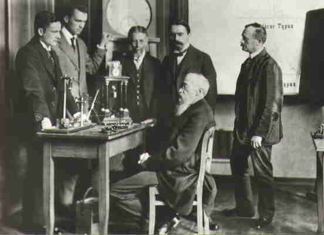
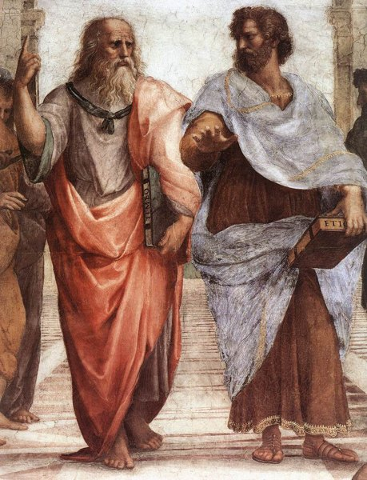
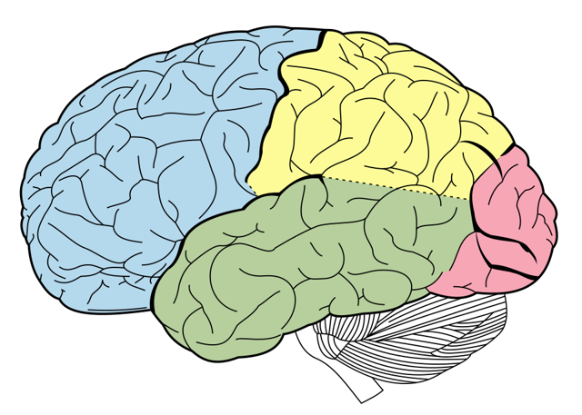

AIT3018 · Học kỳ I, năm học 2026-2027
Viện Trí tuệ nhân tạo · Trường Đại học Công nghệ, ĐHQGHN
Đã bao giờ bạn nghĩ cả tối không ra một bài toán, sáng hôm sau lại chợt nghĩ ra cách giải?
96%người tham gia ở các tạp chí tâm lý hàng đầu
12%dân số thế giới sống ở các nước ấy
WEIRD: Western, Educated, Industrialized, Rich, Democratic
Đoạn A hay đoạn B dài hơn?
Bằng nhau (ảo giác Müller-Lyer). Người San săn bắt hái lượm ở sa mạc Kalahari gần như không bị đánh lừa.
Từ triết học đến khoa học nhận thức
Dấu hiệu của một trí óc có học là có thể xem xét một ý nghĩ mà chưa chấp nhận nó.
Tư duy là một phản ứng ẩn (không nhìn thấy từ bên ngoài), mang tính ký hiệu, trước kích thích.
Suy nghĩ không ai nhìn thấy được. Mỗi thời kỳ chọn một cách khác để nghiên cứu nó.

Nội quan: tự quan sát rồi kể lại điều diễn ra trong đầu mình. Thử ngay:
Ta thấy câu trả lời, nhưng không thấy nó đến bằng cách nào.
Chủ nghĩa hành vi coi phần giữa kích thích và phản ứng là một hộp đen. Cách mạng nhận thức mở hộp ấy ra.
Tư duy là…

Plato tay chỉ lên trời
Có sẵn từ khi sinh ra. Chưa ai thấy một tam giác hoàn hảo, nhưng ai cũng hiểu tam giác hoàn hảo là gì.
Aristotle tay hướng xuống đất
Học từ những gì mắt thấy. Gặp đủ nhiều cái cây, ta rút ra khái niệm “cây”.
Một mạng nơ-ron học nhận ra con mèo từ hàng triệu ảnh. Cách học ấy gần với quan niệm của Plato hay của Aristotle?
Khi ta suy nghĩ, trong đầu diễn ra điều gì: lời nói thầm, các luật, hay hoạt động của một mạng kết nối?
Có ba câu trả lời lớn, mỗi câu gắn với một nhóm nhà nghiên cứu.
tiếng nói thầm trong đầu
Vygotskyghép ký hiệu, chạy luật NẾU - THÌ
Fodor · Newell, Simoný nghĩ trải ra trên rất nhiều nút nối với nhau, như mạng nơ-ron
Rumelhart, McClelland, HintonThêm hai góc nhìn: liên tưởng (ý này gọi ý kia) và Hệ 1, Hệ 2 (nghĩ nhanh, nghĩ chậm).
Vygotsky (1934): lời nói đi dần từ bên ngoài vào trong đầu đứa trẻ.
Mẹ nói với bé
Bé tự nói to khi chơi
Lớn lên, nói thầm
Chỉ còn một chữ
Khi suy nghĩ, bạn có nghe một giọng nói trong đầu không?
Jerry Fodor (1975): trong đầu có một ngôn ngữ ký hiệu riêng, gọi là ngôn ngữ của tư duy (language of thought) hay Mentalese. Nó không phải tiếng Việt hay tiếng Anh. Ý nghĩ được ghép từ các ký hiệu, như câu được ghép từ các từ.
Nghĩa của cả ý ghép từ nghĩa của từng mảnh.
Nghĩ được ý này thì nghĩ được ý kia, không phải học riêng.
Từ ít ký hiệu, ghép ra vô số ý, kể cả những ý chưa ai từng nghĩ tới.
Newell và Simon: tư duy giống một chương trình. Trong đầu có một kho luật NẾU - THÌ. Luật nào khớp với điều đang nghĩ thì chạy, và ghi thêm một ý mới.
Trí nhớ làm việc
điều đang nghĩ
đã ăn quá no
sẽ đau bụng
đi tìm thuốc
Kho luật
viết sẵn
NẾU ăn quá no THÌ sẽ đau bụng
NẾU sẽ đau bụng THÌ đi tìm thuốc
NẾU trời mưa THÌ mang ô
production system · Newell và Simon (1972) · ACT-R (Anderson)
Rumelhart, McClelland, Hinton (thập niên 1980): không có ký hiệu, không có luật. Chỉ có rất nhiều nút nối với nhau. Một ý nghĩ là cả một nhóm nút cùng bật.
Nếu một nút bị hỏng, ý nghĩ “chó có lông” mất hẳn hay chỉ mờ đi?
Chỉ mờ đi: phần lớn nhóm nút vẫn bật.
Cùng một việc: máy đọc chữ số viết tay. Mỗi phe giải bài toán này theo cách nào?
Ký hiệu
NẾU có nét ngang ở trên và một nét chéo xuống THÌ là số 7
Tri thức: do người viết thành luật
Hỏi “vì sao là 7?” thì chỉ ra được luật nào đã chạy.
Gặp số 7 viết vội, nét trên cong lên: không còn nét ngang, luật không khớp.
Kết nối
Tri thức: học từ 60.000 ảnh chữ số
Chữ xấu, ảnh mờ vẫn đọc ra.
Hỏi “vì sao là 7?” thì khó trả lời.
Cùng một chữ “connectionism”, hai thuyết cách nhau gần 90 năm. Khác nhau ở chỗ: nối cái gì với cái gì?
Thorndike, 1898
Nối kích thích với phản ứng
Mèo đói trong hộp đố, tình cờ kéo trúng vòng dây thì cửa mở, được ăn. Càng thử nhiều lần, mèo càng thoát ra nhanh.
Rumelhart, 1986
Nối nút với nút trong mạng
Mỗi đường nối có một trọng số. Học là chỉnh dần các trọng số theo dữ liệu.
Locke, Hume (thế kỷ 17-18): ý này gợi ra ý kia. Hume chia ra ba kiểu gợi.
Nhìn đám mây, nghĩ đến con cừu.
Thấy đôi đũa, nghĩ đến bát cơm.
Thấy tia chớp, chờ tiếng sấm.
Ngày nay: word2vec học nghĩa của một từ dựa trên những từ hay đứng cạnh nó, tức liên tưởng kiểu kề nhau.
Bài toán xe điện: tàu sắp cán năm người. Cả hai cách cứu đều hy sinh một người. Làm như vậy có được phép không?
Tình huống 1 · Gạt cần
Gạt cần chuyển hướng, cho tàu rẽ sang đường ray chỉ có một người.
Tình huống 2 · Trên cầu
Tự tay đẩy một người từ trên cầu xuống để chặn tàu.
Hauser và cs. (2007), mẫu chủ yếu phương Tây. Khảo sát 42 nước: 81% và 51% (Awad và cs. 2020).
Một ý nghĩ được ghép từ những mảnh nào: khái niệm, hình ảnh hay kịch bản?
Lấy một thứ rất quen: cái cây. Trong đầu ta có ít nhất bảy loại đơn vị tư duy về nó.
cây bàng ở sân trường: tán rộng, vỏ sần, lá đỏ
chữ “cây”, chữ “tree”, hình cây nhỏ trên bản đồ
có thân, cành, lá, sống lâu năm; khác bụi cỏ
tay sờ vỏ cây sần sùi, với lên hái quả
“Mọi cây đều có lá.” (có thể đúng hoặc sai)
trồng cây: đào hố, đặt cây con, lấp đất, tưới
hiểu biết chung: rừng, quang hợp, gỗ
nguyên mẫu, quy tắc, mô hình tâm trí
cơ bản ghép từ mảnh cơ bản gắn với cơ thể
Khái niệm gom những thứ có nét chung để ta phân loại. Thấy một con vật lạ, xếp nó vào “chó” là đoán ngay được nó có thể sủa.
Khái niệm xếp thành tầng, từ chung đến riêng
Trong một khái niệm, có thành viên điển hình hơn
Số chẵn có định nghĩa rõ ràng, nhưng người ta vẫn chấm 4 là ví dụ điển hình hơn 106 (Armstrong và cs., 1983).
Khái niệm gọi tên một thứ. Mệnh đề (proposition, khác với mệnh đề trong ngữ pháp) khẳng định một điều về các thứ ấy, nên có thể đúng hoặc sai.
Khái niệm gọi tên
Mệnh đề khẳng định, đúng hoặc sai
loài chim
→
Mọi loài chim đều đẻ trứng.
con chó lông đen của nhà bên
→
Con chó lông đen của nhà bên sủa suốt đêm.
Hà Nội, Việt Nam
→
Hà Nội là thủ đô của Việt Nam.
Sachs (1967) cho người tham gia nghe một đoạn văn. Khoảng nửa phút sau, họ phải cho biết một câu có giống hệt câu đã nghe không.
Đã nghe
Con ngựa vằn cắn con hươu cao cổ.
Đổi câu chữ
Con hươu cao cổ bị con ngựa vằn cắn.
không nhận ra
Đổi ý
Con hươu cao cổ cắn con ngựa vằn.
nhận ra ngay
Trong trí nhớ còn lại ý: CẮN (ngựa vằn, hươu cao cổ)
Kosslyn: dùng một hình ảnh trong đầu gồm bốn thao tác. Thử với con mèo nhà bạn.
Hình dung con mèo ấy.
Nhìn kỹ: tai nó nhọn hay tròn?
Giữ hình ấy trong vài giây.
Xoay nó quay đầu lại, phóng to lên.
Trong đầu là “bức ảnh” thật hay chỉ là mô tả bằng mệnh đề? Tranh luận này đã gặp ở Buổi 5.
Lược đồ (schema): hiểu biết chung về một loại tình huống hay đối tượng. Kịch bản (script): lược đồ cho một chuỗi sự kiện có thứ tự.
Minh vào quán phở, gọi một bát tái, ăn xong rồi về.
Minh đã trả tiền chưa?
Nếu Minh quên trả tiền, người kể sẽ phải nói ra, vì đó là chỗ lệch khỏi kịch bản.
Schank và Abelson (1977) viết kịch bản đi ăn nhà hàng thành một cấu trúc dữ liệu, để máy đọc hiểu được truyện.
script = “nhà hàng”
roles: [khách, phục vụ, đầu bếp, thu ngân]
props: [bàn, thực đơn, món, hóa đơn]
entry_conditions: [khách đói, khách có tiền]
scenes: [vào, gọi món, ăn, trả tiền và ra về]
results: [khách no, khách bớt tiền, quán có thêm tiền]
Chữ “cay” có nghĩa nhờ đâu? Hai câu trả lời.
Ký hiệu symbols
Ký hiệu trừu tượng, tách khỏi giác quan. Muốn giải thích thì dùng các ký hiệu khác.
Nhận thức nhập thân embodied cognition
Lần đầu ăn ớt: lưỡi bỏng rát, chảy nước mắt, vội với lấy cốc nước.
Nghĩa gắn với cảm giác và vận động của cơ thể.
Đọc chữ “đá” (đá bóng), vùng não điều khiển chân cũng hoạt động nhẹ (Hauk và cs., 2004).
Chatbot giải thích chữ “cay” rất trôi chảy. Nó có hiểu “cay” như bạn không?
Theo nhận thức nhập thân thì chưa.
Bảy dòng dưới đây đều về chuyện thi cử. Mỗi dòng ứng với loại đơn vị nào trong bảy loại vừa học?
Suy nghĩ đi lên qua những bậc nào: từ quan sát đến kết luận, từ nhớ đến sáng tạo?
Từ chỗ thấy dữ liệu đến lúc hành động, ta leo qua sáu bậc, thường rất nhanh và không để ý.
6Hành động
5Rút kết luận
4Giả định, niềm tin
3Diễn giải
2Chọn dữ liệu
1Quan sát dữ liệu
Bạn cùng nhóm hai tiếng chưa trả lời tin nhắn. Bạn nghĩ: “Nó bỏ nhóm rồi.” Bạn đã đi vội qua bậc nào?
Diễn giải: mới nghĩ ra một cách hiểu đã tin ngay.
J. Allyn Bradford, theo Chris Argyris
Paul và Elder: người học tư duy phản biện đi qua sáu giai đoạn.
chưa thấy lỗi trong cách mình nghĩ
bắt đầu nhận ra lỗi
cố sửa, chưa đều tay
luyện có kế hoạch
tiến bộ rõ, ổn định
thành thói quen tự nhiên
Thang này đo con người. Thang Bloom ngay sau phân loại câu hỏi và nhiệm vụ học tập.
Bloom xếp các nhiệm vụ học tập theo loại thao tác, từ đơn giản lên phức tạp.
Bloom 1956
Anderson và Krathwohl 2001
Bản 2001 dùng động từ thay cho danh từ (Knowledge thành Remember, tức Biết thành Nhớ), và đưa Tổng hợp, nay gọi là Sáng tạo, lên đỉnh.
Thang độ sâu kiến thức (Depth of Knowledge, DOK) của Webb đo độ sâu của một nhiệm vụ. Bốn nhiệm vụ về cùng một chuyện, tắc đường ở Hà Nội, càng xuống càng sâu.
Norman Webb (1997)
Mỗi câu hỏi ở mức DOK nào?
Graham Wallas (1926): bốn giai đoạn của một ý tưởng mới. Ví dụ: một bài hình khó trong đề ôn thi đại học.
Ngồi cả tối, thử hết cách đã học.
Bỏ đấy đi ngủ, không nghĩ đến nữa.
Sáng ra đang đi xe, chợt thấy cần kẻ thêm một đường.
Về giải lại, kiểm từng bước.
Dinesh Katre (2021) vẽ tư duy thiết kế như một cái cây: đi từ gốc lên ngọn, mỗi bước cần một năng lực nhận thức. Ví dụ: làm ứng dụng tìm phòng tự học còn trống.
Piaget: hai giai đoạn cuối khác nhau ở chỗ suy luận trên vật thật hay trên giả thuyết.
Thao tác cụ thể 7-11 tuổi
Rót nước sang cốc cao và hẹp hơn: trẻ hiểu lượng nước không đổi (bảo toàn), nhưng chỉ suy luận trên vật trước mắt.
Thao tác hình thức từ 11-12 tuổi
Con lắc dao động nhanh vì đâu? Trẻ đổi từng yếu tố một để kiểm giả thuyết, và nghĩ về chính cách mình nghĩ.
Piaget làm thí nghiệm với trẻ ở Geneva. Ở các nền văn hóa khác, tuổi đạt từng giai đoạn khác nhau.
Bốn khung khác về quá trình tư duy, đọc thêm nếu quan tâm.
UnicistKhung phân tích của một viện tư vấn tư nhân, dùng trong kinh doanh; chưa được kiểm chứng như một lý thuyết học thuật.
Linh hoạt tư duyĐổi góc nhìn, đổi cách làm khi tình huống thay đổi.
Các giai đoạn thay đổiProchaska và DiClemente: từ chưa muốn đổi đến giữ được thói quen mới, như bỏ thuốc lá.
Tư duy phản biện thế kỷ 21Kiểm chứng dữ liệu và thông tin do AI tạo ra.
Cảm xúc chen vào suy nghĩ thế nào, não làm gì, và một đàn kiến có biết “nghĩ” không?
Cùng một tình huống, cách nghĩ khác nhau sinh ra cảm xúc khác nhau. Cảm xúc lại đổi cách ta chú ý và hành động.
Tình huống: “Tuần sau thi vấn đáp.”
Ý nghĩ
Cảm xúc
Chú ý, hành vi
Bạn A
“Dịp để thể hiện.”
hào hứng
ôn rộng, thử cả câu khó
Bạn B
“Chắc trượt mất.”
lo, mất ngủ
ôn vội, chỉ thấy câu mình sợ
Cảm xúc tích cực thường mở rộng chú ý, lo âu mạnh thường thu hẹp chú ý.
Tư duy không nằm ở một chỗ. Nhiều vùng não cùng tham gia, mỗi vùng một phần việc.

Vỏ não trước tránlập kế hoạch, ra quyết định, kiềm chế
Thùy thái dươngngôn ngữ, trí nhớ; hồi hải mã nằm sâu bên trong
Thùy đỉnhgom các giác quan, định hướng không gian
Thùy chẩmthị giác
Mạng mặc định gồm nhiều vùng nằm rải rác, ở cả mặt trong lẫn mặt ngoài của não. Nó hoạt động mạnh khi ta lơ đãng.
Tư duy còn có những dạng ngoài con người: động vật dùng công cụ, AI học từ dữ liệu, robot làm theo chương trình. Dạng lạ nhất là bầy đàn: cả đàn tìm ra đường ngắn dù không con nào so sánh được hai đường.
Thí nghiệm của Goss và cs. (1989) với kiến Argentina. Thuật toán tối ưu hóa đàn kiến (ACO) mượn đúng cơ chế này.
Xe điện, Piaget, Wallas, Bloom: kết quả nào đã được kiểm chứng ngoài phương Tây?
Xe điện: cùng thứ tự, mức chênh khác. Piaget: tuổi đạt giai đoạn khác. Wallas, Bloom: rất ít.
Mở Quiz cuối buổi 10 trên Canvas.
8 câu về lịch sử, cơ chế, đơn vị và quá trình tư duy. Làm một lần.
Whorf kể: công nhân hút thuốc cạnh những thùng xăng được gọi là “rỗng”, dù thùng đầy hơi xăng dễ nổ. Chữ “rỗng” có khiến họ bất cẩn không?